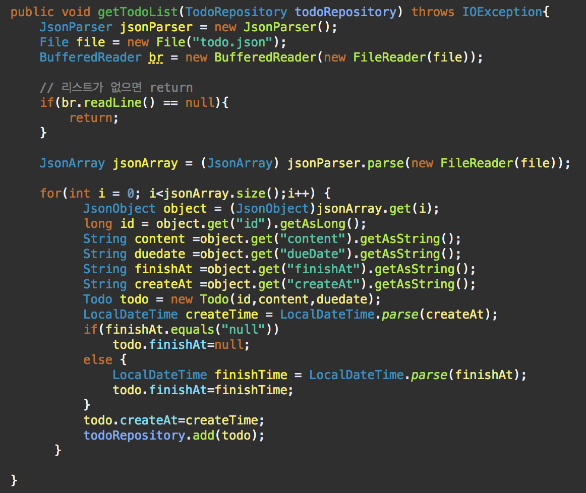
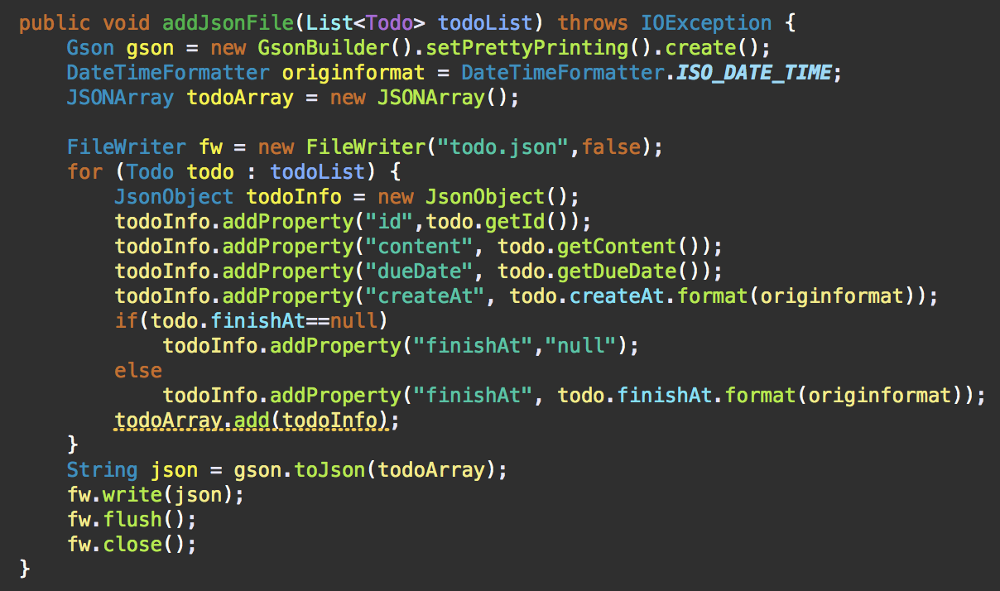
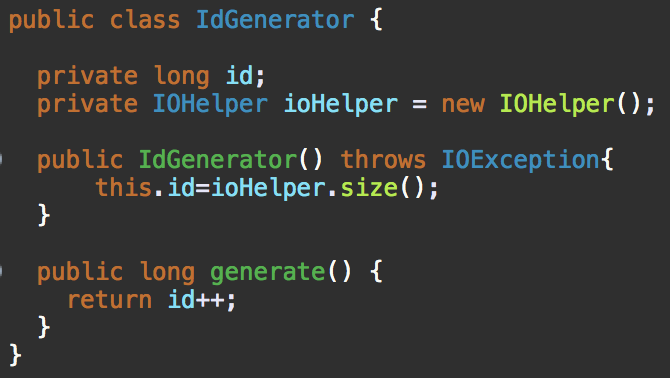
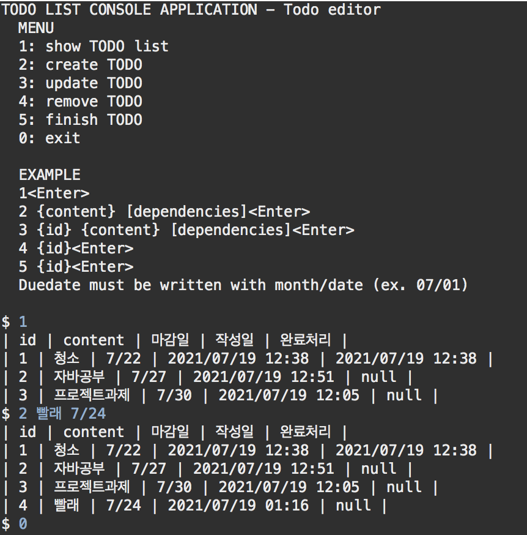
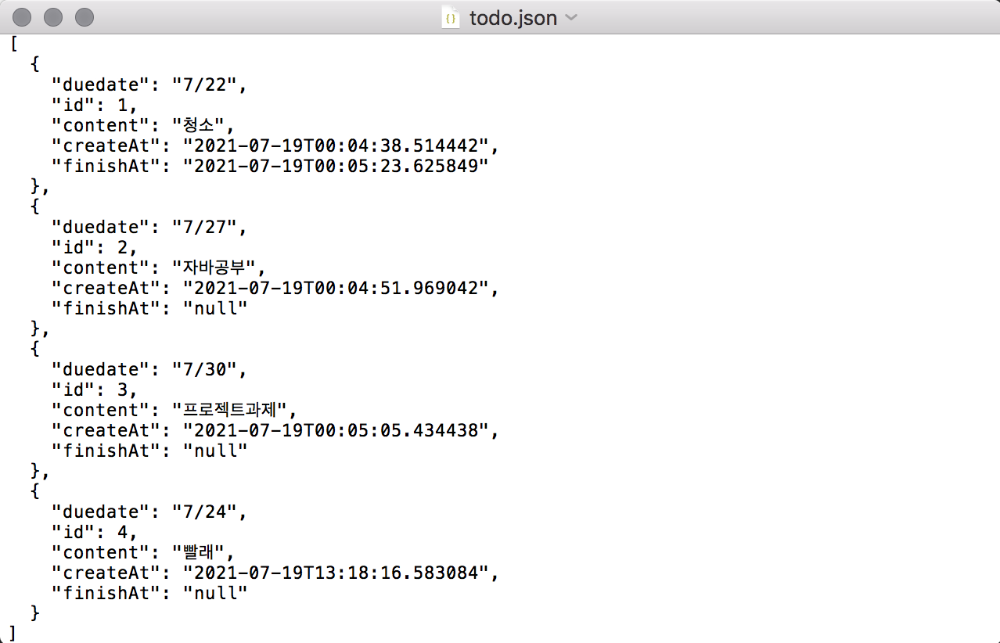

<!doctype html>
<html>
    <head>
        <meta charset="UTF-8">
        <meta name = "viewport" content = "width = device-width, initial-scale=1.0">
        <title>TodoList Customizing</title>
        <link rel="stylesheet" type="text/css" href="../../css/pages.css">
    </head>
</html>

<body>
    <header>
        <h3><a href = "../../index.html">HAGUS <br> HARDWARE</a></h3> 
        <ul id="main_menu">
        </ul>

        <script src = "../../MainMenu.js"></script>
    </header>

    <section class="section">
    <div id = "tag_menu">
    </div>

    <script src = "../../TIL_tag_menu.js"></script>

    <div id = "tag_list">
        <div class="l_title"><a href = "../../TIL.html">Study.</a></div><hr>
        <div class = "l_subtitle"><div class = "title"><a href = "../../TIL.html"><strong>[Java]TodoList Customizing</div><div id="date">2021.07.18</div></strong></a></div>
             <!--====content====-->
        <div class = "content">
        <br>    
<pre>
<code>
<strong>[목표]</strong>

1. "todolist.json"파일을 읽어와서 todolist 만들기.
    - TodoListConsole에서 start할 때 ioHelper.getTodoList(todoRepository) 메서드 호출

2. 시스템을 종료할 때 todolist에 있는 내용을 "todolist.json"파일에 저장하기
    - 종료시 ioHelper.addJsonFile(todoRepository.findAll()) 메서드 호출.

3. Test && 추가 변경 사항

</code>

<span class="h">JSON && GSON 개념</span>

<b>1.1 JSON이란?</b>
JavaScript에서 객체를 표현하는 방법이지만, 다양한 프로그래밍 언어에서 데이터를 주고 받기위해 사용된다. XML등과 같은 데이터를 표현하는 일종의 데이터 표현 표준이다. 주로 인터넷 상에서 데이터를 주고 받을 때 그 자료를 표현하는 방법으로 알려져 있다.

<b>예시<xmp>
    {
        "name" : "Moon" ,
        "age" : 23
    }
</xmp>
</b>
위와 같이 보이는 데이터 형식이 json이다. name은 Moon이며 age는 23인 데이터이다. 이처럼 json은 {} (중괄호)를 통해 하나의 객체를 표현하며, 내부에는 key/:value 쌍으로 각 속성값을 정의하고 있으며 key와 value는 : (콜론)에 의해 구분되고 각각의 속성은 ,(쉼표)로 구분되어진다. 

<b>1.2 Json 문법</b>
    - 객체는 {} 중괄호로 표기한다. 
    - 배열은 [] 대괄호로 표기한다. 
    - 각 속성은 key와 value쌍으로 이루어져 있으며 : 콜론으로 구분된다. 
    - 속성이 여러개인 경우 , 쉼표로 구분한다. 

<b>1.3 장점</b>

가독성
앞서 살펴본 예제 처럼 객체의 구조를 파악하기 쉬운 형태로 이루어져 있다는 것을 알 수 있다. 

가볍다
우선 json보다 일찍 탄생한 xml의 경우 무겁다는 단점이 있다. 왜 무거울까? 그것은 데이터 마다 태그를 이용해 설명을 부여했기 때문. 그에 반해 json은 태그를 사용하지 않고 name:value 쌍으로 데이터를 표현하여 xml에 비해 가볍다는 장점이 있다. 

플랫폼 독립적
특정 언어나 플랫폼에 독립적이어서 위의 JSON 형식만을 지킨다면 어떤 시스템간이든 데이터 교환이 가능해진다. 또한 대부분의 언어에서 JSON 라이브러리를 제공하기 때문에 편리하게 사용할 수 있다. 

* json 라이브러리를 사용하기 위해서는 json 라이브러리를 추가해주어야 한다. 


<b>2.1 GSON 이란?</b>
gson은 json 구조를 띄는 직렬화된 데이터를 JAVA의 객체로 역직렬화, 직렬화 해주는 자바 라이브러리 이다. 즉, JSON Object -> JAVA Object 또는 그 반대의 행위를 돕는 라이브러리 이다. 

<b>2.2 GSON 사용법</b>
역시 gson을 사용하기 위해서는 라이브러리를 추가해주어야 한다. 

JSON 데이터를 JAVA Object로 변경하기 
<code><xmp>
public class Student {
    private int age;
    private String name;

    public Student(int age, String name){
        this.age = age;
        this.name = name;
    }

    public void getInfo() {
        System.out.println("이름은 : " + this.name + "이고, 나이는 "+this.age+"입니다.");
    }
}
</xmp></code>
우선 변경의 대상인 Student Class를 생성해 준다. gson을 이용하여 json을 java 객체로 성공적으로 변경 되었다면 getInfo()메서드를 호출할 수 있을 것이다. 
<code><xmp>
import com.google.gson.Gson;
import com.google.gson.GsonBuilder;

import com.java.ex.Student;

public class Main{
    public static void main(String[] args){
        String jsonString = "{'age':23, 'name':'Moon'}";

        Gson gson = new GsonBuilder().create();
        Student student = gson.fromJson(jsonString, Student.class);

        student.getInfo();
    }
}

======결과======
이름은 : Moon이고, 나이는 23입니다.
</xmp></code>
사용법은 간단하다. 우선 String 형으로 jsonObject를 생성한다. 그 후 GSON객체의 fromJson(jsonString, javaObject.class)를 이용하여 변환하면 된다. fromJson() 메서드의 첫번째 인자로는 json구조를 띈 String을 넘겨주면 되고, 두번째 인자로는 변환을 원하는 JAVA의 Class를 넘겨준면 된다. 당연히 반환형은 2번째 인자로 넘겨준 Class이다. 

<code><xmp>
import com.google.gson.Gson;
import com.google.gson.GsonBuilder;

import com.java.ex.Student;

public class Main(){
    public static void main(String[] args){
        Student student = new Student(23,"Moon");

        Gson gson = new GsonBuilder().create();
        String json = gson.toJson(student);

        System.out.println(json);
    }
}
</xmp></code>

Reference : https://galid1.tistory.com/501

<hr>
<span class="h">1. ioHelper.java안에 getTodoList(TodoRepository todoRepository) 메서드 만들기</span>

파일에서 각 내용을 불러와 todolist에 넣는다.
Gson에서 제공하는 JsonParser와 JsonArray를 사용하였다. 
리스트가 없으면 메서드가 종료한다. 
리스트가 있으면 파일에 있는 각 리스트 값들에 맞게 todolist에 저장해준다. 



<hr>
<span class="h">2. ioHelper.java안에 addJsonFile(List&lt;Todo&gt; todoList) 메서드 만들기</span>

이 코드 역시 Gson 라이브러리를 사용하였다. 
리스트에 있는 값들을 jsonObject로 받아서 JsonArray에 넣어주고 최종적으로 파일에 write 해준다. 



<hr>
<span class="h">3. 추가 변경 사항 idGenerator()</span>

테스트를 해 본 결과, 파일에서 불러온 후에 create를 했을 때 아이디가 1 부터 생성되는 것을 보게 되었다.
아래와 같이 코드를 수정하였다. 


<b>Test 화면</b>
파일 입출력이 정상적으로 잘 된 것을 볼 수 있다. 




</pre>

    <br>
    <br>
    <br>
    </div> 

    </div>

    

</section>

    
</body>


